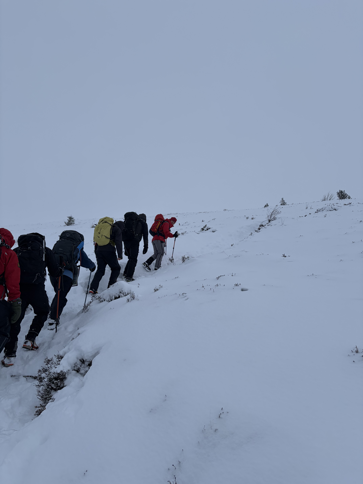
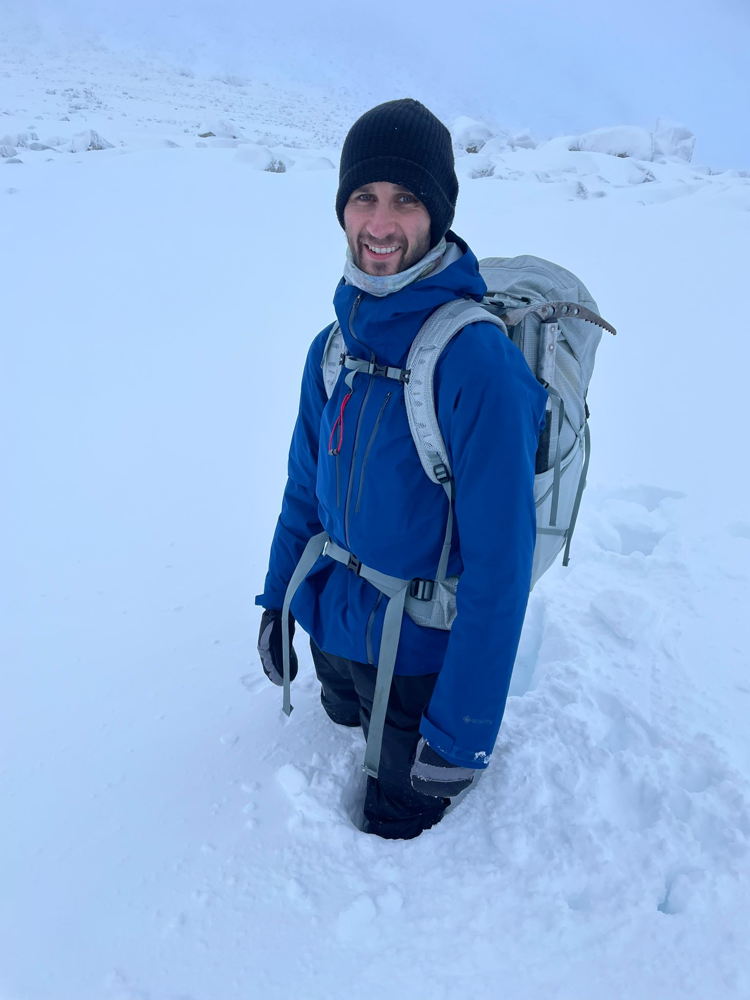

← Travel
Cairngorms 2026
I travelled into the Cairngorms in the height of winter to take part in a Winter Mountaineering course held by the JCMT

3rd January 2026
On Friday morning I took a flight up to Inverness on a freezing day. The airport was quiet, and I took a train into the city to stock up on supplies and have some lunch. I hopped on another train into Aviemore. As I sped along on the train the snow got thicker and thicker until, when I arrived, snow was falling heavily from the sky. While waiting for a ride to the lodge, I spotted a large group of locals at the park with their sleds. Slowly all 12 of us on the course congregated at the lodge and retired to bed to start the course in the morning. I woke up with excitement and we met our course instructors, both very accomplished mountaineers, one of them hadd attained all of the Seven Summits! After our briefing we packed and shipped out to the nearby ski fields where we would start our hiking. First we spoke about navigation where we learned to pace, recognise features and started looking at reading the snow conditions. The scenery was stunningly white and very soon the snow started to fall which made it even more magical. We reached a hut to stop for lunch and started heading up an 810m peak. Conditions were still mild at the base, but we would soon find out that it could change very quickly. As we neared the stop visibility dropped and the wind picked up and soon we were battling to stay upright and see in the wild weather. Our instructor went into survival mode and guided us to the peak and quickly across to the other side and soon we dropped below the wild weather. It was an awesome but dramatic reminder just how quickly the weather can change. On our way down the snow was deep in paerts which meant walking was much more difficult but we were all glad to be into calmer weather. As the sun set we made our way back to the ski field and into the shuttle back to the lodge. A quick dinner and a presentation on snow holing was followed by a well deserved rest!

4th January 2026
Waking up I felt very strong and just as keen. We ate some breakfast and then had a talk about avalanches and the signs to look out for. As there had been a lot of recent snow, the risk was considerate and we would keep an eye out on our walk today. We set off towards a different area today even closer to the ski field. We set off and navigated our way into a corry to look for some ice to practice our crampon skills. On the way we saw signs of cornices and morraines, the first time I had seen them in person. Soon we got the corry and had to cross a boulder field in deep snow. This proved very slow going as every so often our feet would slip under the snow where a boulder had created an air gap. Along with this, there were parts of waist deep snow which required effort to wade through. Finally we got to a spot where we could fit our crampons. We practiced flat footing, using our front toes and variations to get up and down various steepnesses of ice. We also learnt a little about ice axe arrests but couldn't find a spot to practice them. The day went by super quickly and before long we were heading back and it was time for us all to leave. I hitched a ride in a taxi with someone else from the course back to the airport to catch my flight back to London. After a few delays and some abandoned crampons I was on my way back to London, unfortunately the other person wasn't so lucky and their flight was cancelled! I was grateful to be heading back but I reflected on a vry fun course where I learned so much!